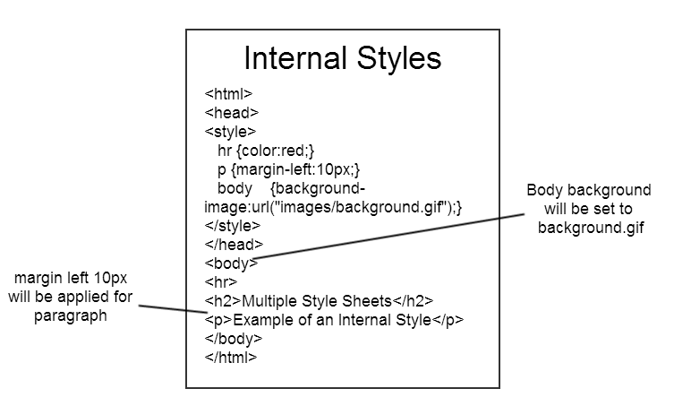

An internal CSS is used to define a style for a single HTML page. An internal CSS is defined in the head section of an HTML page, within a style element. The following example sets the text color of ALL the h1 elements (on that page) to blue, and the text color of ALL the p elements to red. In addition, the page will be displayed with a "powderblue" background color:
